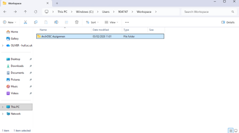
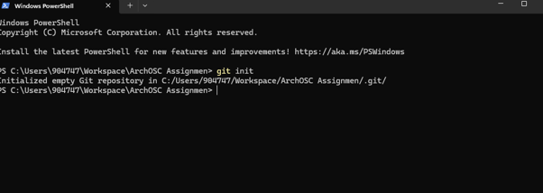
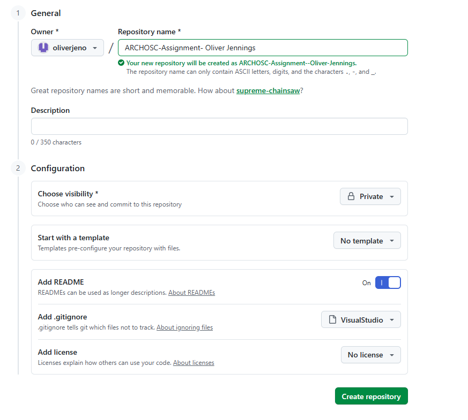
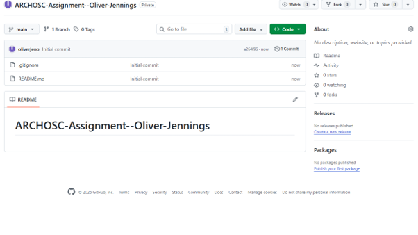
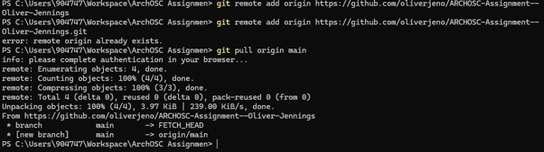
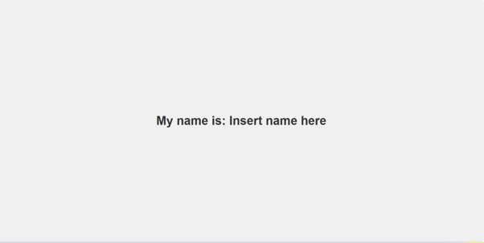
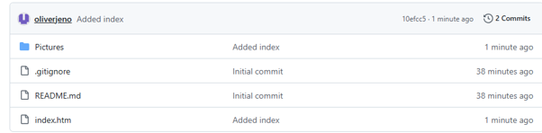
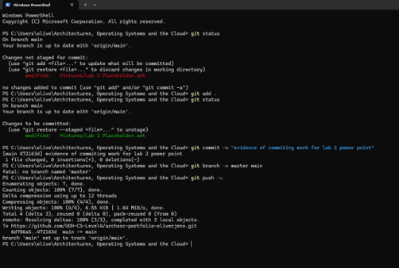
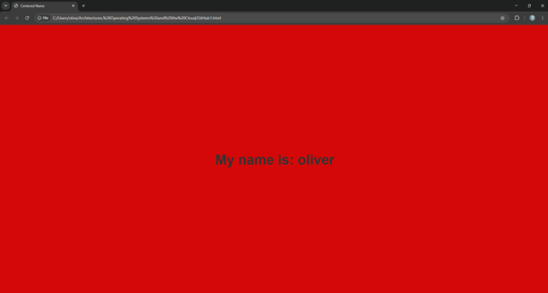
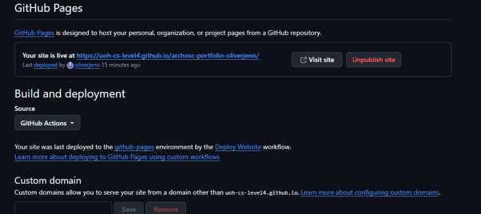

First I created a GitHub account then I proceeded to sign up. I then located the computer science workspace folder (as it is a completely secure area that only I can see) where I can work on my project through the PC instead of OneDrive. I then created the folder where I would store my future work.

I opened up the terminal by right clicking on my folder and selecting Open in Terminal. You can also open the terminal by pressing the Windows key and searching for Terminal. I then entered the command git init to create a local Git repository. This local repository is where I can save and track my work before pushing it to GitHub.

Now I’ve got a local repository I need to create a GitHub repository to link it to. I pressed the green new button create a repository I then selected myself as the no template name holder and named the repository according to instruction. And finally I set the “readme” file to on and set “add .gitignore” to visual studio and created the repository where I will push and pull my work from.


I then went back to created a link between my local and online GitHub repository, this is so I can push and pull my work fluidly between the two. I then pulled the files already on GitHub down to my local repository using the “git pull origin main” command in the terminal.

I then used visual studio code and pasted some of the html code that would be required for my website. I saved and named the file index.html as instructed. This will be useful in future labs when I edit my work more detailed.

I then checked the status of my work using the “git status” command and used “git add .” so GitHub knows specifically which untracked files need to be tracked. Finally, I wrote a commit message using “git commit -m ‘insert message’” this is used when pushing your work to GitHub with a clear message, so you know what you changed. The final step of this process is pushing it onto GitHub. To do this you used the command “git branch -m master main” this just ensures our main branch follows the naming conventions of GitHub, lastly, we push the work onto GitHub using the “git push -u” command. This ensures the work is safe and ready to be pulled down into the workplace folder during the next lab.


The first change I did was making my website red I did this by on visual studio code changing my background colour too red (rgb (250,7,7) and I changed the name “insert name here” to my name.

I then pushed my website onto github by going to the repository setting pages and then deployed from branch and clicked main branch. The link allows you to access the website on any device.

Throughout this lab I learned how to create a local Git repository, connect it to a remote GitHub repository, commit changes, push and pull files, and publish my website using GitHub Pages. I also learned how to use HTML and CSS to customise a webpage by changing the background colour and editing the content.
These skills are useful in industry because software developers use Git and GitHub to work on projects track changes and collaborate with other developers. Creating and publishing websites is also an important skill for web development and allows work to be shared online.